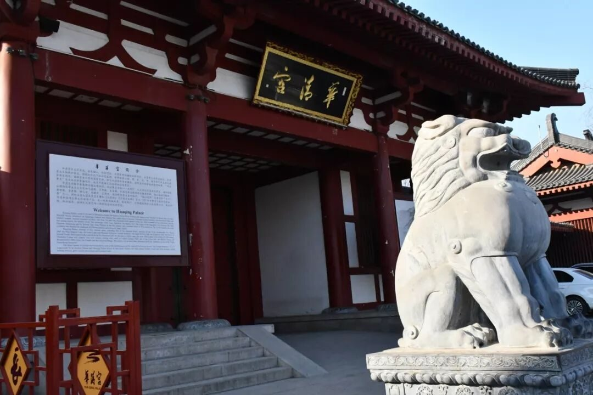
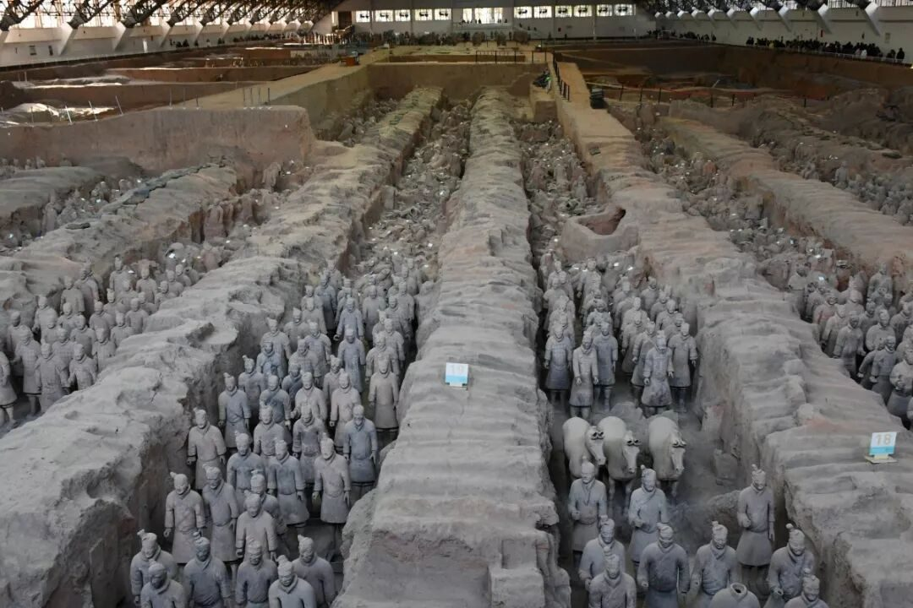

【行者无疆 · 韶忆长安】 兵谏华清-秦俑怀古

”行者无疆 韶忆长安“


春寒赐浴华清池，温泉水滑洗凝脂。
侍儿扶起娇无力，始是新承恩泽时。
云鬓花颜金步摇，芙蓉帐暖度春宵。
春宵苦短日高起，从此君王不早朝。
——白居易《长恨歌》

西安向东是临潼，地下埋藏有国家古墓葬排行首位的秦始皇帝陵，虽并未真正挖掘，但帝陵以东的秦兵马俑便足够令其盛名远播。
骊山之腰，因为一场政变而名闻天下，不管历史的真相距离我们多么遥远。这的确让我相信，历史进程经常会被意想不到的东西打断，一头栽进去，嫁接在历史的长河中，这个节点如同疤痕一样突兀，让人惊讶，但历史不都是在曲折中前进的吗？


华清宫

山脚下的华清池水，源自骊山温泉，流过千年栈道，缱绻海棠芬芳。长恨一歌演绎着帝妃的缠绵悱恻，氤氲着诗人的一厢浪漫。只叹，诗人希冀的是玫瑰的漂浮，真实的历史却是一条流血的河。跳脱其外，不妨像市井小民一般，闲谈宫闱贵妃醉，戏语金殿荔枝香。

兵马俑
帝陵之中，坑道如田畦，夯筑分列隆起，军阵整齐，兵车相间。霎那的冲击与视觉的震撼远不足以彰显其雄伟壮观，或许只有用“奇迹”二字才是对这殉葬制度有始以来的巅峰作品最好的褒奖。


震撼之余，无法忽视的，是坑道后方的残俑，或碎肢或断首。或因木质腐朽，屋顶坍塌所致；或毁于战火，徒留残破令人唏嘘。
当然，尘归尘，土归土，安静地站在这片古老的土地之上，或许是它们最好的归宿。


图片丨丛雨晴 王一岚
文字丨李竹晴
责编丨牛直达
审核丨邓子孚 潘雯雯
行者无疆实践团
QQ：2758025831

随行者一起认识世界
长按二维码关注